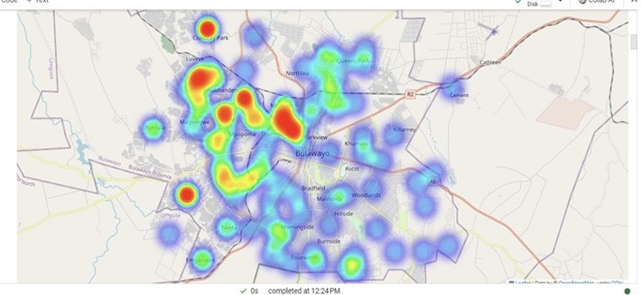

Python · scikit-learn · Firebase · Ionic React
Mobile Crime Hotspot Mapping & Alert System
Cross-platform mobile app that warns users near high-crime areas in Bulawayo. A Python pipeline ingests 10,000+ historical crime records and clusters them with DBSCAN into high-risk zones with 95% accuracy, backed by real-time Firebase geofencing alerts and Google Maps visualisation.